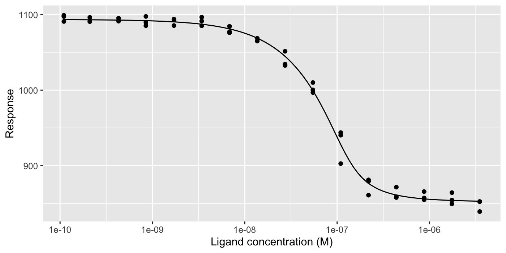

tidymst reads the Excel files exported by NanoTemper’s MO.Affinity Analysis software from microscale thermophoresis (MST) experiments into tidy data frames, and analyses them:
- Read MST traces, capillary scans, dose-response data and fits with
read_mst()and friends. Every export is read into the same standard columns, with concentrations in molar. - Recalculate Fnorm from the traces with any hot and cold windows, using
mst_fnorm(). - Fit Kd and Hill binding models with
mst_fit(), and get the coefficients and curves withmst_coefs()andmst_curve(). - Convert responses to delta Fnorm and fraction bound with
mst_normalise(). - Plot traces and dose-response curves with
mst_plot_traces()andmst_plot_dose_response(), or with your own ggplot2 code.
Installation
Install the development version of tidymst from GitHub with:
# install.packages("pak")
pak::pak("BradyAJohnston/tidymst")Example
Read the MST traces exported from MO.Affinity Analysis, calculate Fnorm for the capillaries that weren’t marked as outliers, and fit a Kd:
library(tidymst)
library(dplyr)
traces <- read_mst_traces(tidymst_example("dppr10-cy5_traces.xlsx"))
fnorm <- traces |>
filter(included, target == "atpH-fl") |>
mst_fnorm(hot = c(19, 20))
fits <- mst_fit(fnorm, .by = target)
mst_coefs(fits)
#> # A tibble: 4 × 7
#> target model term estimate std_error conf_low conf_high
#> <chr> <chr> <chr> <dbl> <dbl> <dbl> <dbl>
#> 1 atpH-fl kd unbound 1.09e+3 1.74 1.09e+3 1.10e+3
#> 2 atpH-fl kd bound 8.52e+2 2.80 8.46e+2 8.58e+2
#> 3 atpH-fl kd kd 1.26e-8 0.00000000367 6.99e-9 2.27e-8
#> 4 atpH-fl kd target_concentration 1.20e-7 0.00000000951 1.02e-7 1.40e-7
mst_plot_dose_response(fnorm, fits)
See vignette("tidymst") for a full walk-through, including how to make your own plots.